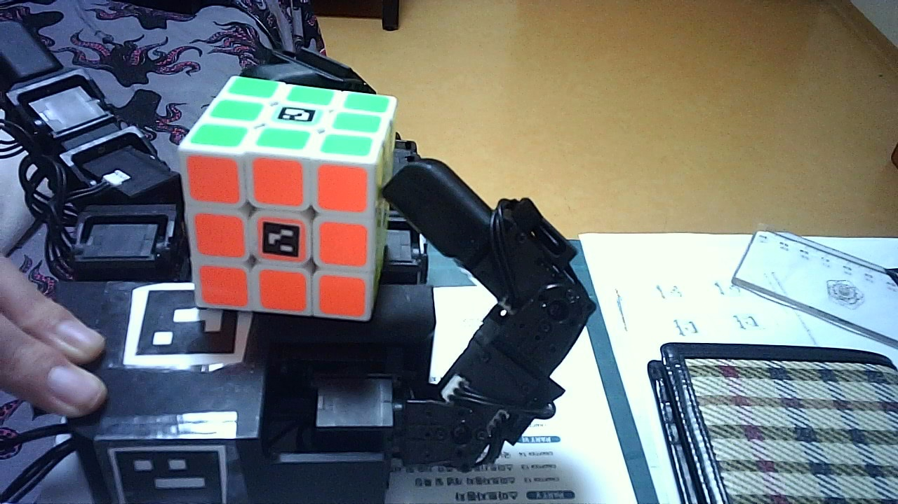

2026-11-06 실행을 2026-11-09에 검토했다. 로봇이나 카메라를 다시 열지 않았다.

아래 슬라이더로 두 원본을 겹쳐 비교할 수 있다. 사진 파일을 변형하거나 3D 좌표로 정합하지 않았다.
앞면 ID3 마커 중심의 화면 이동은 약 1.55픽셀이다. 두 사진에서 기준 ID40/41은 검출되지 않아 카메라와 큐브의 움직임을 분리하거나 mm 및 실제 회전각으로 환산하지 않는다.
| 관절 | 접기 전 실제 틱 | 접은 뒤 실제 틱 | 변화 |
|---|---|---|---|
| ID9 중지 끝 | 3290 | 3326 | +3.16° |
| ID11 중지 두 번째 | 2496 | 2505 | +0.79° |
| ID10 중지 회전 | 1626 | 1644 | +1.58° |
| ID12 중지 뿌리 | 2169 | 2126 | -3.78° |
프로그램에 저장된 두 관찰 시점의 인코더 값이다. 중지가 움직였다는 근거이며, 각도를 음수/양수 방향으로 더 밀면 성공한다는 뜻은 아니다.
동일한 Linux 모델 경로를 다시 재생하고 중간 상태를 원본과 비교했다. 엄지만 내리는 후보, 검지/엄지 파지로 옮기는 후보와 검지 접촉을 낮추는 후보를 별도 연구 폴더에 기록한다. 원래 실행 명령과 170개 결합 원본 파일은 바꾸지 않았다.
실물 기록 요약 · 원본 해시 확인 · Linux 원래 경로 재생 · 검지/엄지 전환 · 검지 접촉 낮추기 · 방향 미세 조정 연구